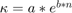
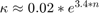
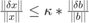
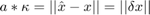
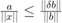
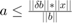
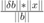
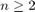

Contents
Skapar de nödvändiga matriserna, vektorerna och variablerna
%Skapar cell-arrayer med de första Hilbertmatriserna, x-vektorerna, %b-vektorerna, xhat-vektorerna, fel-vektorerna och residual-vektorerna och %lägger i de första elementen H = {hilb(1)}; x = {[1]}; b = {H{1}*x{1}}; xhat = {H{1}\b{1}}; fel = {xhat{1}-x{1}}; r = {b{1}-H{1}*xhat{1}}; %Skapar arrayer med normena av felen, normena av residualen och %konditionstalen och lägger i de första värdena normfel = [norm(xhat{1}-x{1})]; normr = [norm(r{1})]; %Anger toleransen som behövs för att beräkna det maximala n-värdet tol = 1e-2; %Skapar en array som kommer att innehålla alla n-värden (behövs för att %plotta mot n) N = [1]; %Skapar en array som ska innehålla konditionstalen till hilbertmatriserna condtal = [cond(H{1})]; %Börjar while-loopen från i=2 i = 2; %Skapar de nödvändiga matriserna, vektorerna och talen för i = 2, ..., n %till normfelet är större en sqrt(i)*tol. Termen sqrt(i) kommer från att %normen av vektorn x är sqrt(k) och vi är intresserade av det relativa %felet while normfel(i-1)/sqrt(i)<tol %Fyller ut cell-arrayerna med Hilbertmatriserna, x-vektorerna, %b-vektorerna, xhat-vektorerna, fel-vektorerna och residual-vektorerna H{i} = hilb(i); %En for-loop skapar x-vektorn för varje i x{i} = [1]; for k = 2:i x{i} = [x{i};1]; k = +k; end b{i} = H{i}*x{i}; xhat{i} = H{i}\b{i}; fel{i} = xhat{i}-x{1}; r{i} = b{i}-H{i}*xhat{i}; %Fyller ut arrayerna med normerna av felen och normerna av residualerna normfel = [normfel,norm(xhat{i}-x{i})]; normr = [normr,norm(r{i})]; %Fyller ut arrayen med alla n-värden N = [N,i]; %Fyller ut arrayen med alla konditionstal condtal = [condtal, cond(H{i})]; i = i+1; end n = i-1; % 12 %Det maximala n för vilket approximationen är användbar bedöms alltså att %vara 12
Plottar normen av felen mot n, normen av residualerna mot n, konditionstalen mot n och normen av felen mot konditionstalen
%Sätter manuellt figurens storlek f = figure(1); FS = get(f,'Position'); set(f,'Position',[FS(1) FS(2) FS(3)*1.5 FS(4)*1.5]) %Plottar normen av felen mot n, semilogy subplot(2,2,1) semilogy(N,normfel, 'blue') xlabel(['$n$'],'Interpreter','latex','fontsize',13) title('$\textnormal{Normen av felen (semilogy)}$','fontsize',13, ... 'Interpreter','latex') ylabel('$||\hat{x}-x||_2$','Interpreter','latex','fontsize',13) %Plottar normen av residualerna mot n, semilogy subplot(2,2,2) plot(N,normr, 'blue') xlabel(['$n$'],'Interpreter','latex','fontsize',13) title('$\textnormal{Normen av residualerna}$','fontsize',13, ... 'Interpreter','latex') ylabel('$||r||_2$','Interpreter','latex','fontsize',13) %Plottar konditionstalen mot n, semilogy subplot(2,2,3) semilogy(N,condtal, 'blue') xlabel(['$n$'],'Interpreter','latex','fontsize',13) title('$\textnormal{Konditionstalen (semilogy)}$','fontsize',13, ... 'Interpreter','latex') ylabel('$\kappa(H)$','Interpreter','latex','fontsize',13) %Plottar normen av felen mot konditionstalen, OBS: loglog subplot(2,2,4) loglog(condtal,normfel, 'blue') xlabel('$\kappa(H)$','Interpreter','latex','fontsize',13) title('$\textnormal{Normen av felen mot konditionstalen (loglog)}$', ... 'Interpreter','latex','fontsize',13) ylabel('$||\hat{x}-x||_2$','Interpreter','latex','fontsize',13)

Slutsatser från graferna
Residualen verkar inte vara ett bra mått på felets storlek i allmänhet. Om man dock plottar till t.ex. n=100 så ser man att när felet blir ovanligt stort så blir också residualen ovanligt stor, residualens kurva följer ungefär felets kurva. Detta fenomen är dock inte sant för n<13.
En linjäranpassning av de logaritmerade värdena av normalen av felet mot de logaritmerade värdena av konditionstalet ger en linje med lutning ungefär 1. Detta betyder att normalen av felet växer linjärt med konditionstalet.
Grafen som relaterar konditionstalet till n verkar vara en exponentialfunktion. Låt oss testa detta genom att ansätta  och lösa ut a och b genom fit-funktionen i MATLAB för olika n och ta medelvärdet av koefficienterna.
k=[]; for i = 2:n f=fit(N(1:i)',condtal(1:i)','exp1'); k=[k, coeffvalues(f)']; end k a1=mean(k(1,:)) b2=mean(k(2,:))
k =
Columns 1 through 7
0.0519 0.0262 0.0202 0.0174 0.0157 0.0145 0.0135
2.9591 3.3014 3.3877 3.4249 3.4458 3.4593 3.4687
Columns 8 through 11
0.0128 0.0122 0.0119 0.0201
3.4757 3.4811 3.4836 3.4359
a1 =
0.0197
b2 =
3.3930
Koefficienterna verkar alltså vara ungefär a= 0.02, b= 3.4. Som vi ser är det inte mycket varians mellan koefficienterna för de olika n-värdena. Därmed kan vi med ganska stor sannolikhet säga att .
Plottar 2
Vi försöker hitta det exakta sambandet mellan condtal och normfel. Vi visade ovan att det sannolikt finns ett linjär samband för n som bedöms vara rimliga, så vi försöker hitta det sambandet genom polyfit.
Sedan jämför vi med teorin. I boken Numerisk Analys finns sambandet:

Om vi antar att det finns ett linjärt samband på formen:
,
så kan vi sätta in det i den teoriteska formeln och få sambandet:
,
vilket leder till:
.
Då kan vi plotta a och  mot n och lätt kolla om sambandet stämmer.
%Vi börjar alltså genom att hitta a med polyfit. warning('off'); c = polyfit(condtal,normfel,1); %Vi får att a = 2.4698e-17. Nu måste vi beräkna högerledet. Som vanligt %börjar vi med att skapa arrayer och lägga in de första värdena. Sedan %använder vi en for-loop för att beräkna de resterande värdena. K = norm(H{1}*(xhat{1}-x{1}))*norm(x{1})/norm(b{1}); a = 2.4698e-17; for i = 2:n K = [K, norm(H{i}*(xhat{i}-x{i}))*norm(x{i})/norm(b{i})]; a = [a,2.4698e-17]; end %Nu plottar vi a mot N (svart) och K mot N (rött). Om vårt samband stämmer %så ska den svarta kurvan ligga 'under' den röda. hold on figure(2) plot(N,a, 'black') plot(N,K, 'red')

Som vi ser ligger den röda funktionen ovanför den svarta för alla . Resultatet stämmer inte för n=1 för att felet då är exakt lika med 0.